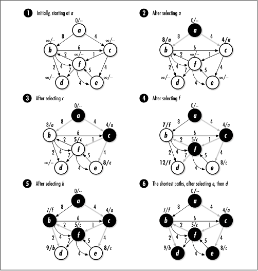

16.4 Description of Shortest
Paths
Finding the shortest path, or minimum-weight path, from one vertex to another in a graph
is an important distillation of many routing problems.
Formally stated, given a directed, weighted graph G = (V, E
), the shortest path from vertex s to t
in V is the set S of edges in E that connect s to t
at a minimum cost.
When we find S, we are solving the single-pair shortest-path problem. To do this,
in actuality we solve the more general single-source shortest-paths
problem , which solves the single-pair
shortest-path problem in the process. In the single-source
shortest-paths problem, we compute the shortest paths from a
start vertex s to all other
vertices reachable from it. We solve this problem because no
algorithm is known to solve the single-pair shortest-path
problem any faster.
16.4.1 Dijkstra's Algorithm
One approach to solving the
single-source shortest-paths problem is Dijkstra's algorithm (pronounced
"Dikestra"). Dijkstra's algorithm grows a shortest-paths tree, whose root is
the start vertex s and whose
branches are the shortest paths from s to all other vertices in G. The algorithm requires that all
weights in the graph be nonnegative. Like Prim's algorithm,
Dijkstra's algorithm is another example of a greedy algorithm
that happens to produce an optimal result. The algorithm is
greedy because it adds edges to the shortest-paths tree based
on which looks best at the moment.
Fundamentally, Dijkstra's algorithm works by
repeatedly selecting a vertex and exploring the edges incident
from it to determine whether the shortest path to each vertex
can be improved. The algorithm resembles a breadth-first
search because it explores all edges incident from a vertex
before moving deeper in the graph. To compute the shortest
paths between s and all other
vertices, Dijkstra's algorithm requires that a color and
shortest-path estimate be maintained with every vertex.
Typically, shortest-path estimates are represented by the
variable d.
Initially, we set all colors to white, and we
set all shortest-path estimates to  , which represents an
arbitrarily large value greater than the weight of any edge in
the graph. We set the shortest-path estimate of the start
vertex to 0. As the algorithm progresses, we assign to all
vertices except the start vertex a parent in the
shortest-paths tree. The parent of a vertex may change several
times before the algorithm terminates. , which represents an
arbitrarily large value greater than the weight of any edge in
the graph. We set the shortest-path estimate of the start
vertex to 0. As the algorithm progresses, we assign to all
vertices except the start vertex a parent in the
shortest-paths tree. The parent of a vertex may change several
times before the algorithm terminates.
Dijkstra's algorithm proceeds as follows.
First, from among all white vertices in the graph, we select
the vertex u with the smallest
shortest-path estimate. Initially, this will be the start
vertex since its shortest-path estimate is 0. After we select
the vertex, we color it black. Next, for each white vertex
v adjacent to u, we relax the
edge (u, v). When we relax an edge, we
determine whether going through u improves the shortest path computed
thus far to v. To make this
decision, we add the weight of (u, v)
to the shortest-path estimate for u. If this value is less than or
equal to the shortest-path estimate for v, we assign the value to v as its new shortest-path estimate,
and we set the parent of v to
u. We then repeat this process
until all vertices have been colored black. Once we have
computed the shortest-paths tree, the shortest path from s to another vertex t can be determined by starting at
t in the tree and following
successive parents until we reach s. The path in reverse is the
shortest path from s to t.
Figure
16.3 illustrates the computation of the shortest paths
between a and all other
vertices in the graph. The shortest path from a to b, for example, is 〈a, c,
f, b〉, which has a total weight of 7.
The shortest-path estimate and parent of each vertex are
displayed beside the vertex. The shortest-path estimate is to
the left of the slash, and the parent is to the right. The
edges shaded in light gray are the edges in the shortest-paths
tree as it changes.

|